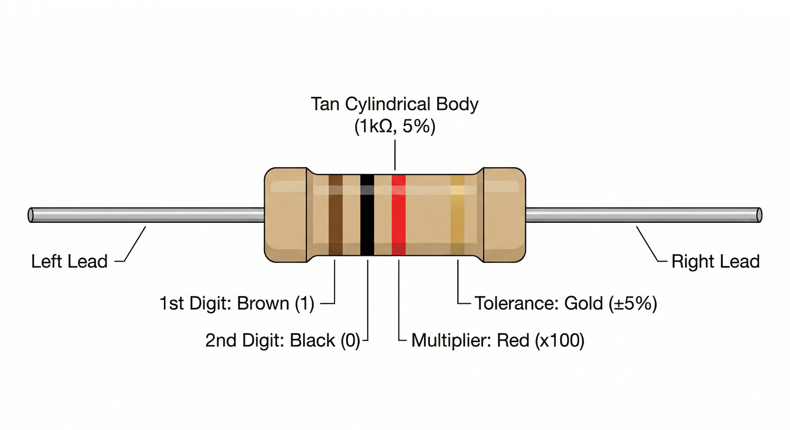

A Resistor is a fundamental passive electronic component that implements electrical resistance as a circuit element. In electronic circuits, resistors are used to reduce current flow, adjust signal levels, and divide voltages.

Resistors are built using semi-conductive materials (like carbon or metal film) that impede the flow of electrons:
V = I × R. By increasing the resistance, you decrease the current for a given voltage.| Terminals | Function |
|---|---|
| Pin 1 & Pin 2 | Resistors are non-polarized. You can connect them in either direction. |
In OpenHW Studio, the resistor value can be adjusted in the properties panel. The simulation engine will automatically recalculate the voltage drops and current throughout your circuit based on the resistance value you set.